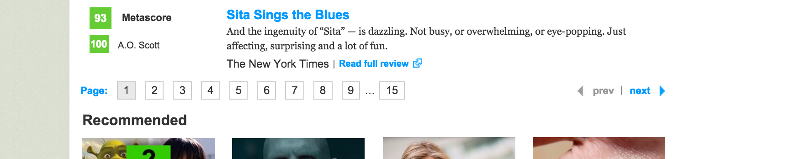

Metacritic, whyyyy?
In this entry I'm going to talk about 2 major issues that came up while scraping data from metacritic.com, which is now the most important data source for my Luther Project. The 2 major issues involved TERRIBLE pagination issues and annoying redirects.
Let's start with the pagination issues:

What is Pagination?
Pagination is simply when the content doesn't fit on one page so a website adds those annoying links at the bottom for the next pages. However, this has been replaced on some sites by infinite loading scripts.
Why so bad on metacritic?
Go to a page like this. Everything seems okay. And even the first 6 pagination links work fine. But get to the 7th one and you'll notice something weird. This one has 300 entries, not 100! And even weirder, pages 8 and 9 have the exact same lists! What's even weirder is that if you're using the default sorting by critic score, even this weird pagination issue is inconsistent! So how to solve this?
Solution
The solution has a few components to it. Basically I found out that when you sort it by Metascore, the issue still comes up, but it is at least consistent throughout, starting from page 7 and onward.
skip = 0
for num in range(0, (int(pagination))):
if skip < 1 or skip == 3:
new_reviews = get_reviews_by_critic(slug, num)
reviews += new_reviews
if len(new_reviews) > 100:
skip = 1
else:
skip += 1
Basically this script first detects if there are more than the 100 entries. If there are, it adds a skip. And it will then skip the next 2 pages. And then start again in 3 pages.
What is a redirect
Basically, sometimes a link has moved or a url has been changed, so the site will redirect you to the correct url if you go to the right one. On Metacritic, for example, there may be a link to this: (http://www.metacritic.com/movie/twelve-years-a-slave) but when you click on it, it will redirect to this: (http://www.metacritic.com/movie/12-years-a-slave). This presents a bit of a problem for scraping because the scraper wants to scrape the first site but doesn't get anything back because of the redirect.
Solution
try:
movie_doc = just_get_html(movie_url)
except:
movie_url = "http://www.metacritic.com/movie/" + review_dict['movie_slug']
request = urllib2.Request(movie_url)
request.add_header('User-Agent', req_header)
opener = urllib2.build_opener()
f = opener.open(request)
movie_doc = just_get_html(f.url)
Basically, I am importing and using the requests module from Python. If the regular url doesn't exist, then it tries to find the redirect. And then it uses the new redirected page url to scrape. Simple.
What I Learned Today:
Lefteris Greek restaurant in Tarrytown, NY is AMAZING! The Gyro Platter is to die for.